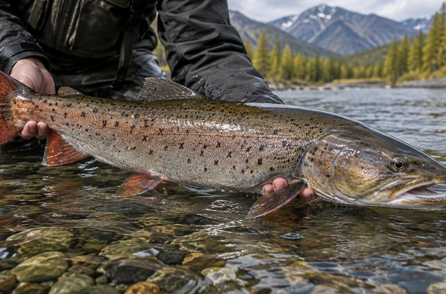
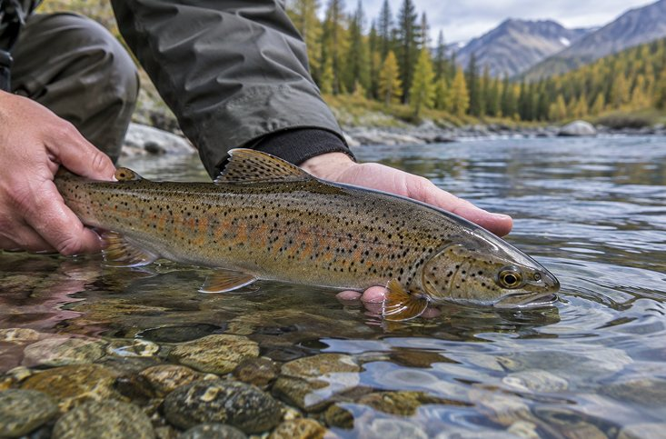
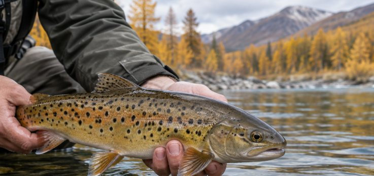
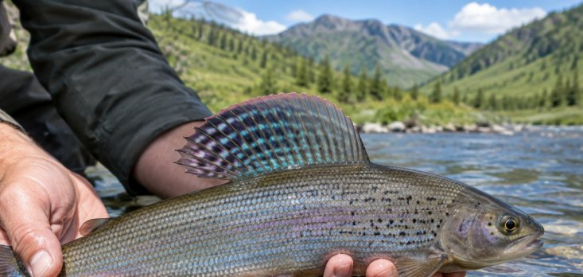
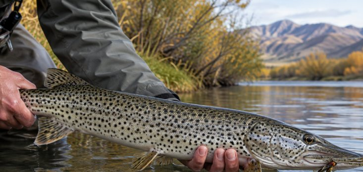
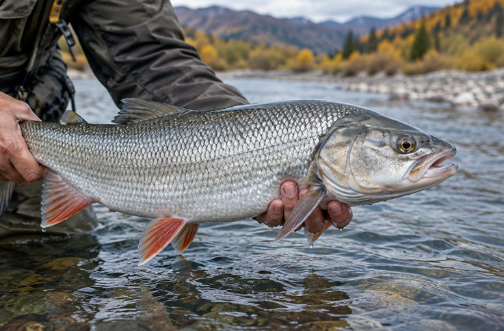
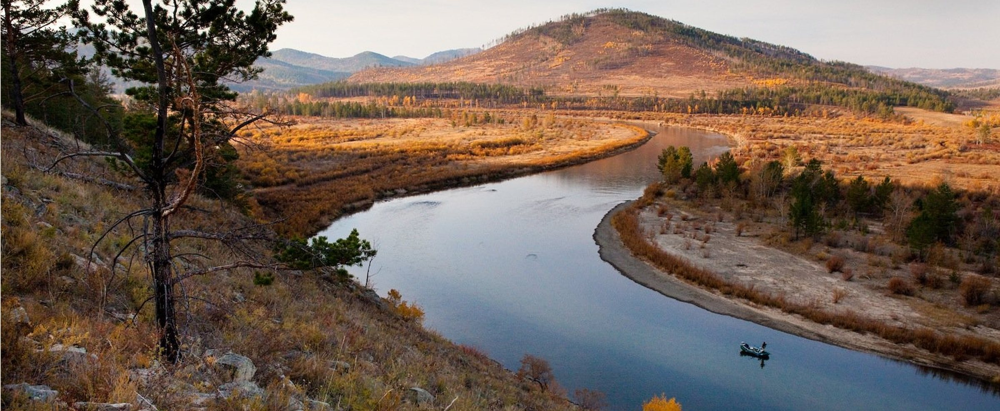

Taimen
Onon · Delgermurun — the world’s largest salmonid, always released.
Six species · Two rivers
Taimen are why most anglers come — but the Onon and Delgermurun hold five more species worth a fly. Every fish is released.

Onon · Delgermurun — the world’s largest salmonid, always released.

Onon · Delgermurun — often called Mongolian trout, hard-fighting.

Onon — shares the water with taimen and lenok.

Delgermurun — quick to rise to a small dry fly.

Onon — a fierce ambush predator of the slower water.

Onon — a fast, surface-feeding predator.
Latin names, best months per species and photos for lenok, Amur trout, grayling, pike and asp pending from client.
OUR RULES
Rules every guide and guest follows on the water.

Conservation
Each catch is measured, logged and shared with a research organisation (name to be confirmed) to help protect taimen for the long term.

Tell us which river and dates interest you — our team replies within 48 hours with availability and pricing.
Prices on request · Small groups of 2–8 anglers · Since 2004